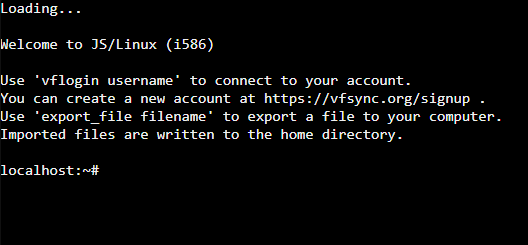
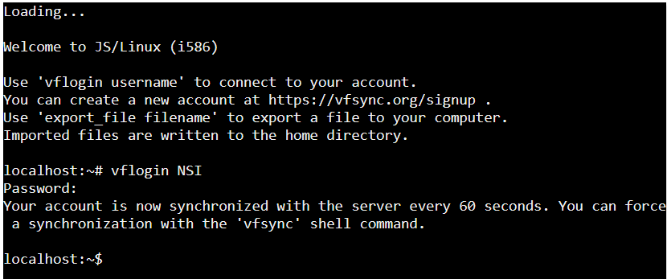
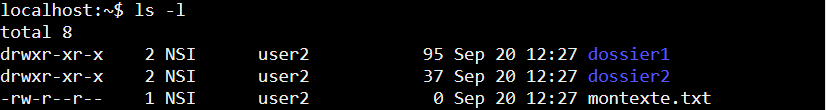

TP - Utilisation d'une console shell⚓︎
Objectifs
Avec le jeu Terminus, vous avez découvert des commandes UNIX/Linux de façon ludique. Ce TP vous fait passer dans un vrai terminal Linux. À la fin, vous devez être autonome pour :
- naviguer dans l'arborescence avec des chemins absolus et relatifs ;
- créer, copier, déplacer et supprimer fichiers et dossiers ;
- chercher dans un fichier, rediriger et enchaîner des commandes ;
- lire et modifier les droits d'un fichier ;
- éditer un fichier texte ;
- exécuter un script et observer les processus.
1. Mise en route⚓︎
Nous utilisons JSLinux, un ordinateur Linux simulé dans le navigateur.
- Rendez-vous sur https://bellard.org/jslinux
- Cliquez sur click here sur la ligne Alpine Linux (console).

Après quelques secondes, l'invite de commande apparaît :
localhost:~#
Le # indique que vous êtes root, l'administrateur : vous avez tous les droits.
Sur un vrai ordinateur, on ne travaille jamais en root : on utilise un compte ordinaire. Nous allons donc nous connecter avec un compte personnel.
-
Créez un compte sur https://vfsync.org/signup en choisissant un nom d'utilisateur et un mot de passe.

-
Dans le terminal, tapez
vfloginsuivi de votre nom d'utilisateur, par exemplevflogin alice, puis votre mot de passe.
L'invite devient :
localhost:~$
Le $ indique que vous êtes maintenant un utilisateur ordinaire, comme sur votre ordinateur. Votre dossier personnel ~ est sauvegardé sur le serveur : vous retrouverez vos fichiers à la prochaine séance en refaisant vflogin.
Mots de passe
Dans un terminal, le mot de passe ne s'affiche pas quand on le tape. C'est normal.
Ce qui n'est pas sauvegardé
Seul votre dossier personnel est sauvegardé. Tout le reste (le dossier /tmp, les utilisateurs créés…) disparaît quand vous fermez ou rechargez la page.
2. De Terminus à Linux⚓︎
Les sorts de Terminus sont de vraies commandes Linux.
| Dans Terminus | Dans Linux | Remarque |
|---|---|---|
ls, cd, pwd |
ls, cd, pwd |
identiques |
less OBJET |
less fichier, cat fichier |
less permet de défiler (on quitte avec q), cat affiche tout d'un coup |
man SORT |
man commande |
on quitte avec q |
help |
commande --help |
aide courte d'une commande |
mv, cp, touch, rm, mkdir |
identiques | en plus : rmdir et rm -r pour les dossiers |
unzip SAC.zip |
unzip archive.zip |
|
grep MOT OBJET |
grep mot fichier |
|
sudo COMMANDE |
sudo commande |
sudo n'existe pas dans JSLinux : on redevient root autrement (voir §5) |
whoami |
whoami |
Comme dans Terminus, la touche Tab complète les noms et les flèches ↑ ↓ rappellent les commandes précédentes.
Exercice 1
- Tapez
whoami, puispwd. Qui êtes-vous ? Où se trouve votre dossier personnel ? - Tapez
ls /. Retrouvez-vous des dossiers de Terminus ? - Tapez
man lset cherchez à quoi sert l'option-a. Quittez avecq.
3. L'arborescence et les chemins⚓︎
3.1 La racine et les chemins⚓︎
Sous Linux, tous les fichiers et dossiers forment un seul arbre dont la racine s'appelle /.
Un chemin indique l'emplacement d'un fichier ou d'un dossier dans cet arbre.
- Un chemin absolu part de la racine : il commence toujours par
/. Il fonctionne quel que soit le dossier où l'on se trouve. Exemple :/home/eleve/NSI/montexte.txt - Un chemin relatif part du dossier courant : il ne commence pas par
/. Exemple : si l'on est dans/home/eleve, le cheminNSI/montexte.txtdésigne le même fichier.
Quatre symboles à connaître :
| Symbole | Signification | Exemple |
|---|---|---|
/ |
la racine (au début d'un chemin) ou le séparateur entre deux noms | /home/eleve |
. |
le dossier courant | ./script.sh |
.. |
le dossier parent | cd .., cat ../notes.txt |
~ |
le dossier personnel | cd ~, ~/NSI |
Astuce
Utilisez souvent pwd pour vérifier où vous êtes. cd tout seul ramène au dossier personnel.
3.2 Les commandes⚓︎
| Commande | Description |
|---|---|
pwd |
affiche le chemin absolu du dossier courant |
ls |
liste le contenu du dossier |
ls -l |
liste en détail (droits, propriétaire, taille, date) |
ls -a |
affiche aussi les fichiers cachés |
cd dossier |
entre dans un dossier |
cd .. |
remonte au dossier parent |
cd ~ ou cd |
retourne au dossier personnel |
mkdir dossier |
crée un dossier |
touch fichier.txt |
crée un fichier vide |
cp fichier1 fichier2 |
copie un fichier |
mv fichier dossier |
déplace un fichier |
mv fichier1 fichier2 |
renomme un fichier |
rm fichier |
supprime un fichier (définitivement !) |
rmdir dossier |
supprime un dossier vide |
rm -r dossier |
supprime un dossier et tout son contenu |
Exercice 2
-
Dans votre dossier personnel, créez l'arborescence suivante :
~ └── NSI ├── dossier1 │ ├── fichier1.txt │ └── fichier2.txt ├── dossier2 └── montexte.txt -
Donnez le chemin absolu de
fichier1.txt. - En étant dans
dossier2, quelle commande affiche le contenu dedossier1sans changer de dossier ?
Exercice 3
- Dans votre dossier personnel, créez un fichier
test.txtet deux dossierslivre1etlivre2. - Dupliquez
test.txtentest1.txtettest2.txt. - Déplacez
test1.txtdanslivre1. - Vérifiez le contenu de chaque dossier.
- Supprimez les deux dossiers
livre1etlivre2. Pourquoirmdir livre1ne fonctionne-t-il pas ?
4. Chercher, rediriger, enchaîner⚓︎
4.1 Écrire dans un fichier : les redirections > et >>⚓︎
Normalement, une commande affiche son résultat à l'écran. Le symbole > redirige ce résultat vers un fichier.
| Commande | Effet |
|---|---|
echo Bonjour |
affiche Bonjour à l'écran |
echo Bonjour > f.txt |
écrit Bonjour dans f.txt (le contenu précédent est écrasé) |
echo Salut >> f.txt |
ajoute Salut à la fin de f.txt |
ls / > liste.txt |
enregistre le résultat de ls / dans liste.txt |
cat f1.txt f2.txt > fusion.txt |
met bout à bout (concatène) deux fichiers dans un troisième |
cat > f.txt |
écrit dans f.txt tout ce que vous tapez au clavier, jusqu'à Ctrl + D |
Ctrl + D
Ctrl + D signifie « fin de fichier » (EOF, End Of File). C'est ainsi qu'on termine une saisie au clavier.
4.2 Chercher avec grep⚓︎
Comme dans la Bibliothèque de Terminus, grep affiche les lignes d'un fichier qui contiennent un mot.
| Commande | Effet |
|---|---|
grep mot fichier |
affiche les lignes contenant mot |
grep -i mot fichier |
sans tenir compte des majuscules |
grep -n mot fichier |
avec les numéros de ligne |
grep -c mot fichier |
compte les lignes |
grep mot *.txt |
cherche dans tous les fichiers .txt du dossier |
4.3 Enchaîner avec le tube |⚓︎
Le tube | envoie le résultat d'une commande à la commande suivante.
ls -l /bin | grep sh # parmi les programmes de /bin, ceux dont le nom contient sh
ls /bin | grep -c '' # compte les programmes de /bin
Exercice 4
-
Créez le fichier
livre.txtavec ces trois lignes, sans éditeur, avecechoet des redirections :Le magicien Magus menace Terminus. Le village est paisible. Magus a disparu. -
Affichez les lignes qui contiennent
Magus, avec leur numéro. - Combien de lignes contiennent
magus, sans tenir compte des majuscules ? - Enregistrez dans
racine.txtla liste des dossiers de/, puis affichez seulement ceux qui contiennent la lettrer, à l'aide d'un tube.
5. Les utilisateurs et les droits⚓︎
5.1 Lire les droits⚓︎
Les systèmes UNIX sont multi-utilisateurs : chaque utilisateur a ses fichiers et ses droits. L'administrateur, root, a tous les droits. C'est le « mot de passe sudo » de Terminus. Pour simplifier la gestion, les utilisateurs sont réunis en groupes.
La commande ls -l affiche les droits :

De gauche à droite : droits, nombre de liens, propriétaire, groupe, taille en octets, date, heure, nom. Dans cet exemple, le propriétaire est NSI et le groupe user2.
Les droits s'écrivent avec 10 caractères, par exemple -rw-r--r-- :
- le 1er caractère donne le type :
-pour un fichier,dpour un dossier ; - puis trois groupes de trois lettres : les droits du propriétaire, du groupe, et des autres.
| Lettre | Sur un fichier | Sur un dossier |
|---|---|---|
r |
lire le contenu | lister le contenu (ls) |
w |
modifier le contenu | créer ou supprimer des fichiers dedans |
x |
exécuter (programme, script) | entrer dedans (cd) |
- |
droit absent | droit absent |
Pour -rw-r--r-- : c'est un fichier ; le propriétaire peut le lire et le modifier ; le groupe et les autres peuvent seulement le lire.
5.2 Modifier les droits avec chmod⚓︎
Chaque groupe de trois droits s'écrit en binaire : 1 si le droit est présent, 0 sinon.
| Droits | Binaire | Chiffre |
|---|---|---|
rwx |
111 |
7 |
rw- |
110 |
6 |
r-x |
101 |
5 |
r-- |
100 |
4 |
--- |
000 |
0 |
Ainsi chmod 640 fichier donne les droits rw-r-----.
5.3 Passer en root pour administrer⚓︎
Certaines opérations sont réservées à root : créer un utilisateur, changer le propriétaire d'un fichier, modifier les fichiers des autres…
Sur un vrai ordinateur, on tape sudo devant la commande, comme dans Terminus. Dans JSLinux, sudo n'est pas installé. Mais votre session a été ouverte depuis la session root du départ : il suffit de la quitter pour redevenir root.
| Commande | Effet |
|---|---|
exit |
quitte votre session : vous redevenez root (l'invite passe de $ à #) |
adduser -D invite |
(root) crée l'utilisateur invite, sans mot de passe |
su - invite |
(root) devient invite et va dans son dossier /home/invite |
exit |
quitte la session d'invite : retour à root |
vflogin nom |
retour à votre propre session |
Pensez à revenir à votre session
Tant que vous êtes root, votre dossier personnel n'est plus sauvegardé. Refaites vflogin dès que vous avez fini les opérations d'administration.
Exercice 5
-
Dans votre session (
$), tapez :cd /tmp echo Bonjour > note.txt ls -l note.txt adduser -D inviteQuels sont les droits de
note.txt? Qui en est le propriétaire ? Pourquoiadduseréchoue-t-il ? -
Retirez au groupe et aux autres le droit de lire
note.txt. Avez-vous eu besoin d'être root ? Pourquoi ? - Tapez
exitpour redevenir root, vérifiez avecwhoami, puis créez l'utilisateurinvite. -
Devenez
invite(su - invite), puis essayez :cat /tmp/note.txt ls /home ls /home/alice # remplacez alice par votre nom d'utilisateurExpliquez chaque résultat. Puis tapez
exitpour revenir à root. -
En root, faites d'
invitele propriétaire denote.txt(chown --helpvous aidera). Vérifiez qu'invitepeut maintenant le lire. Pourquoi ne pouviez-vous pas faire cela dans votre session ? - En root, créez un dossier
/tmp/coffreet donnez-lui les droitsrwxrw-r--.invitepeut-il y entrer aveccd? Pourquoi ? - Quel chiffre faut-il pour que le propriétaire puisse tout faire, le groupe lire et exécuter, et les autres seulement exécuter ?
- Revenez à votre session avec
vflogin.
6. Éditer un fichier avec vi⚓︎
L'éditeur de texte présent sur tous les systèmes UNIX est vi. Il fonctionne avec deux modes :
- le mode commande (au démarrage) : les touches donnent des ordres ;
- le mode insertion : on tape du texte.
| Touches | Action |
|---|---|
vi fichier.txt |
ouvre (ou crée) le fichier |
i |
passe en mode insertion : on peut écrire |
Échap |
revient au mode commande |
:w puis Entrée |
enregistre |
:wq puis Entrée |
enregistre et quitte |
:q! puis Entrée |
quitte sans enregistrer |
Perdu dans vi ?
Appuyez sur Échap, puis tapez :q! et Entrée : vous sortez sans rien modifier.
Exercice 6
- Ouvrez
montexte.txtavecvi, écrivez deux lignes de texte, enregistrez et quittez. - Vérifiez le contenu du fichier avec
cat. - Rouvrez-le, ajoutez une ligne, puis quittez sans enregistrer. Vérifiez avec
cat.
7. Scripts et processus⚓︎
Un processus est un programme en cours d'exécution. Chacun a un numéro, le PID.
| Commande | Effet |
|---|---|
python3 essai.py |
exécute un script Python |
python3 |
ouvre l'interpréteur Python (on en sort avec exit() ou Ctrl + D) |
commande & |
lance la commande en arrière-plan : le terminal reste disponible |
ps |
liste les processus et leur PID |
top |
affiche les processus en temps réel (on quitte avec q) |
kill PID |
demande au processus de s'arrêter |
kill -9 PID |
arrête le processus immédiatement, sans discussion |
| Ctrl + C | interrompt la commande en cours |
Attention
kill -9 détruit le processus sans lui laisser le temps de s'arrêter proprement. On ne l'utilise qu'en dernier recours.
Exercice 7
-
Avec
vi(oucat >), créez le scriptcompte.py:for i in range(20): print(i)Exécutez-le.
-
Créez le script
boucle.py, qui ne s'arrête jamais :import time while True: time.sleep(1)Lancez-le avec
python3 boucle.py. Le terminal ne répond plus : arrêtez le script avec Ctrl + C. -
Relancez-le en arrière-plan avec
python3 boucle.py &. Retrouvez son PID avecps, puis arrêtez-le aveckill. Vérifiez avecpsqu'il a disparu. - Lancez
top. Quel processus utilise le plus le processeur ? Quittez avecq.
8. Travail à rendre⚓︎
Seul l'exercice suivant est à rendre.
Exercice 8 — À rendre
On considère l'arborescence suivante :
/
├── bin
│ ├── bash
│ └── cat
├── home
│ ├── alice
│ └── bob
│ ├── documents
│ │ ├── images
│ │ │ └── logo.png
│ │ ├── musique
│ │ │ ├── classique
│ │ │ └── rock
│ │ │ ├── track1.mp3
│ │ │ └── track2.mp3
│ │ ├── videos
│ │ └── mon_roman.docx
│ └── tmp
├── etc
└── usr
- Si je suis dans
documents, qu'affichepwd? - Depuis
images, donnez deux commandes différentes qui permettent d'aller dansmusique. - Quelle est la différence entre
cp test1.txt test2.txtetmv test1.txt test2.txt? - Depuis
documents, que se passe-t-il avecrm videos? Quelle commande faut-il utiliser ? - Depuis
documents, quelle commande supprime le dossierrocket son contenu ? - Quelle commande affiche les droits de
mon_roman.docx? - Quelle commande permet que seul le propriétaire puisse lire et modifier
mon_roman.docx(sans exécution) ? - Comment créer un fichier texte et écrire dedans ? Donnez deux méthodes.
- Comment exécuter le script
prog.py? - Quelle commande affiche les processus en cours ?